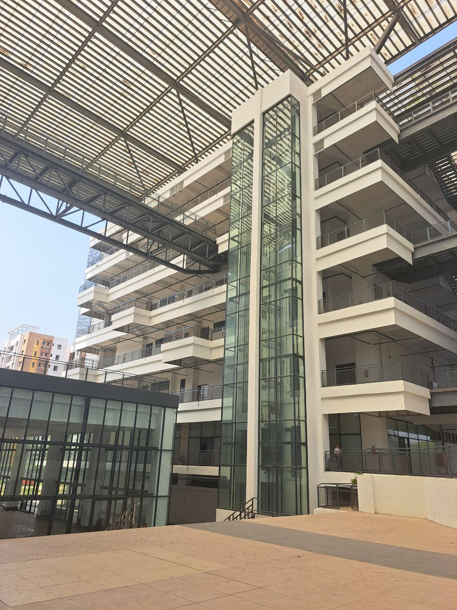
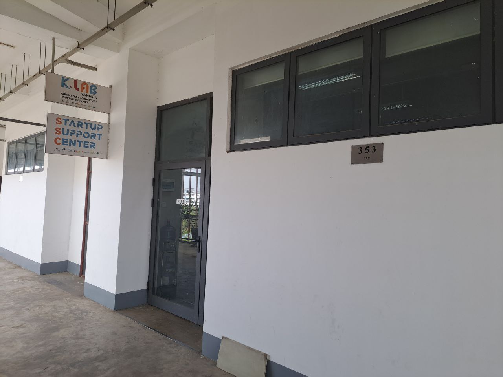
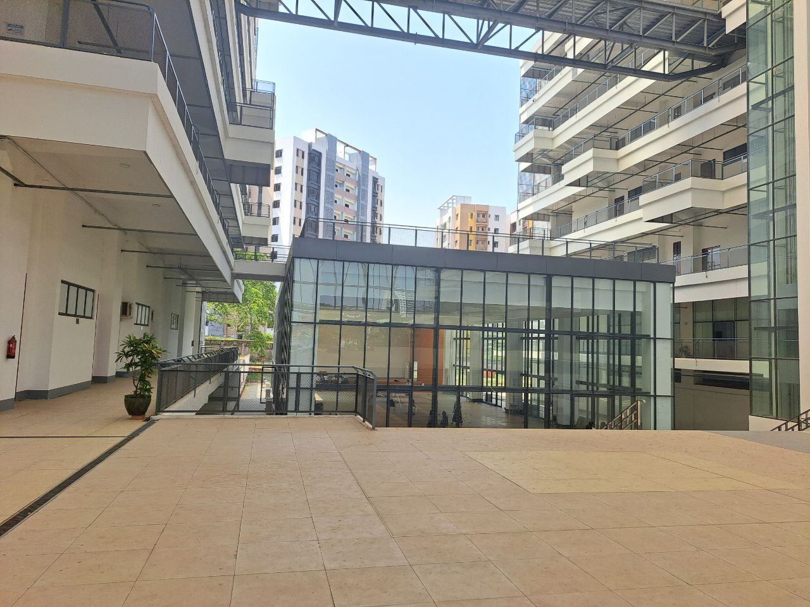
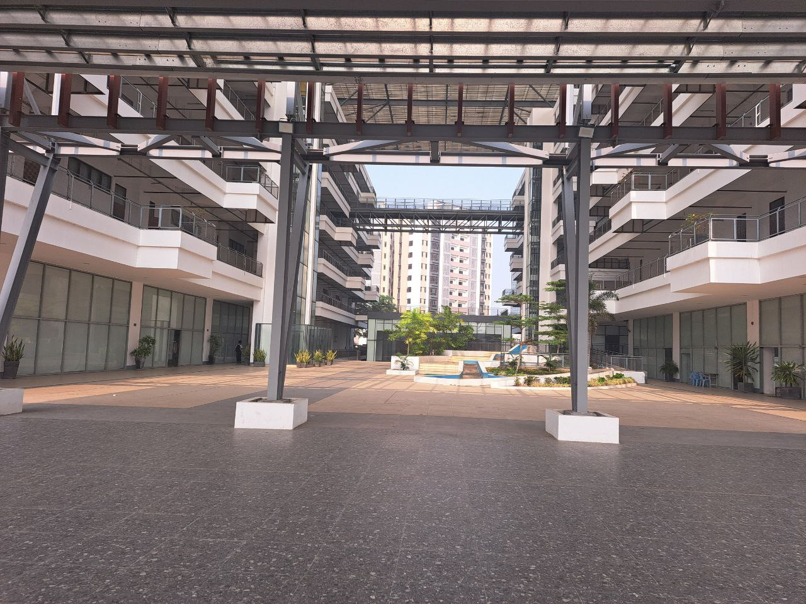

Explore the evolution of the University of Information Technology and our commitment to innovation in ICT.
UIT was established as a Center of Excellence to produce world-standard computer professionals in Myanmar.

Expanded our curriculum to include advanced postgraduate courses, Master's, and Doctoral programs.

The Research mission was strengthened, providing computing and IT solutions for national development.

Forged strong collaborations with international universities to ensure our students meet world standards.

Continuing our journey towards a brighter future through innovation in ICT and excellence in education.